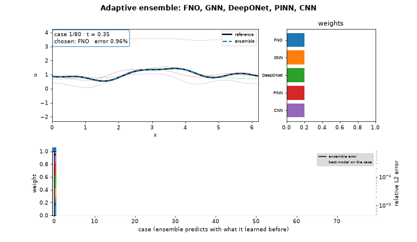
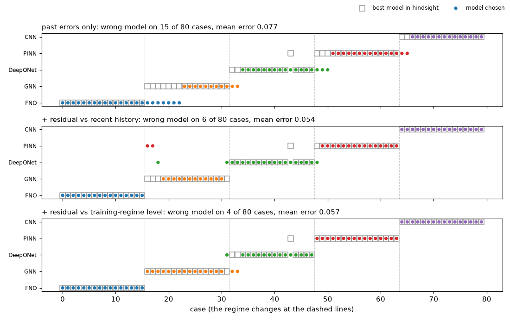
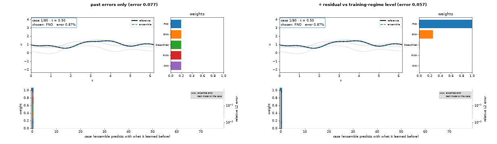
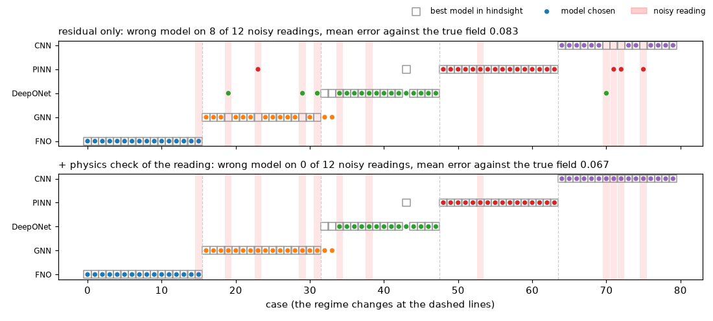
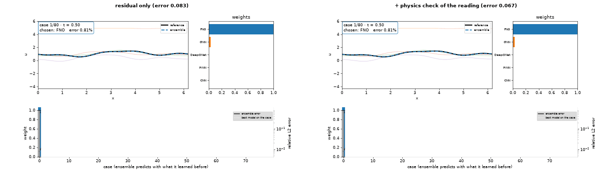

Adaptive ensembles of physics models¶
pinneapple_physics.ensemble.PhysicsEnsemble (also pp.ensemble.PhysicsEnsemble) selects and combines physics
models case by case: neural operators (FNO, DeepONet), graph networks (MeshGraphNet), PINNs, numerical solvers and
closed forms. It uses the same prequential core as the adaptive forecaster
(pinneapple_physics.online_learning): Fixed-Share weights, AdaHedge over the learning and switching rates, adaptive
conformal intervals. Every case is predicted with weights learned from earlier cases only, so the model choice
cannot overfit.
from pinneapple_physics.ensemble import PhysicsEnsemble, from_callable, from_solution, from_torch
experts = [
from_torch("fno", fno_model, to_input=lambda case: make_fno_input(case), from_output=lambda y, case: y[0]),
from_torch("gnn", meshgraphnet, to_input=lambda case: make_graph(case), from_output=lambda y, case: y[0]),
from_solution("pinn", pp.solve(problem, "pinn"), points=lambda case: case["points"]),
from_callable("solver", lambda case: run_solver(case), cost=50.0),
]
ens = PhysicsEnsemble(experts, mode="select") # or "combine"
for case in stream:
out = ens.predict(case) # field, interval, per-expert fields, weights, active model
ens.update(case, reference=high_fidelity(case)) # when a reference exists
What the weights can learn from¶
| Signal | Argument | When to use |
|---|---|---|
| Reference field (sensor, experiment, high-fidelity run) | update(case, reference) |
relative L2 error; validation campaigns, digital twins with sensors |
| Physics residual, no reference | residual_fn, residual_weight |
operation without ground truth: models that violate the PDE lose weight |
| Cost | cost_weight, Expert(cost=...) |
adaptive fidelity: the cheap surrogate while it is good enough, the solver when it is not |
| Physics residual of the current case, before predicting | residual_fn, residual_lookahead |
regime changes: the choice reacts on the first new case instead of after past errors pile up |
With mode="select" and predict(case, select_only_leader=True) only the leading model runs, except every
explore_every cases, when all run so their errors stay current. Experts that raise or return non-finite values are
left out of that case and scored with the worst loss.
Other options: conserve=(weights, target_fn) projects the combined field onto a conserved total;
min_weight keeps near-zero weights out of the "combine" average; point_weights gives quadrature weights for the norms.
fit_static_weights(predictions, references) fits fixed convex weights on a validation set and reports their
cross-validated error next to each single model.
Results (advection-diffusion with exact solutions, pinneapple_physics.advection_diffusion_1d)¶
150 cases whose diffusivity moves through three regimes; every learned model was trained on one regime only
(examples/physics_ensemble/fno_pinn_gnn_solvers.py):
| low nu | mid nu | high nu | all cases | |
|---|---|---|---|---|
| FNO (trained on low nu) | 0.57 % | 4.4 % | 40 % | |
| MeshGraphNet (trained on mid nu) | 19 % | 16 % | 38 % | |
| PINN (high nu, physics loss only, no data) | 16 % | 13 % | 6.5 % | |
| upwind FD | 4.1 % | 3.4 % | 2.5 % | |
| Lax-Wendroff FD, coarse grid | 2.5 % | 1.2 % | 0.10 % | 1.25 % (best single model) |
| Adaptive ensemble, select | 0.57 % | 2.0 % | 0.10 % | 0.88 % |
Relative L2 error of the space-time field. 90 % intervals covered 93 % of the points. In the tests
(tests/test_physics_ensemble.py) the residual-only mode (no reference at all) removes the out-of-distribution FNO
in the high-diffusion regime, and the cost-aware lazy mode cuts the compute by more than 70 % against running every
model while keeping the error low. With CPU-sized training the MeshGraphNet stays the weakest expert; the ensemble
learns to ignore it. In "combine" mode a model that fails badly still costs a little during a regime change, so
"select" is the better default when some experts can be far off.
The PDE residual is a good detector of failure (it flags the out-of-distribution FNO at once), not a ranking of the most accurate model: a learned field can have a larger residual than a slightly less accurate numerical solution.
Five model families and an animated view¶

examples/physics_ensemble/five_model_families_gif.py puts an FNO, a MeshGraphNet (multiscale ring graph), a
DeepONet, a PINN (physics loss only) and a dilated 1-D CNN in one ensemble. Each is trained on its own regime of
advection speed and diffusivity; the stream of 80 cases drifts through the five regimes. Relative L2 error per regime
(select mode, 16 cases each):
| regime (training data of) | FNO | GNN | DeepONet | PINN | CNN | ensemble |
|---|---|---|---|---|---|---|
| FNO (c = 1, low nu) | 1.2 % | 240 % | 38 % | 45 % | 72 % | 1.2 % |
| GNN (c = 0.5, high nu) | 18 % | 5.4 % | 18 % | 26 % | 74 % | 10 % |
| DeepONet (c = 0, mid nu) | 37 % | 63 % | 11 % | 18 % | 29 % | 16 % |
| PINN (c = -0.5, high nu) | 39 % | 28 % | 16 % | 4.2 % | 51 % | 7.0 % |
| CNN (c = -1, low nu) | 128 % | 153 % | 37 % | 27 % | 0.96 % | 4.7 % |
| all cases | 24 % (best single) | 7.8 % |
The ensemble switches to the right family 2 to 6 cases after each regime change (the gap to the diagonal is that delay); no single model comes close over the whole stream. 90 % intervals covered 90 % of the points.
Detecting the regime change before the errors pile up¶
The weights above learn only from cases already seen, so every switch lags. residual_lookahead adds a signal that
exists at prediction time: before choosing, each model's PDE residual on the current case is compared with a
reference level for that model, and the weights are tilted by (r / reference) ** -residual_lookahead. A model whose
residual is far above its reference has left its domain; the learned weights still decide between models whose
residuals look normal. The reference is, in order of preference:
residual_baseline: the level each model has in its own domain, measured before operation on a few of its training or validation cases (residual_baseline(experts, {name: domain_cases}, residual_fn));- otherwise the model's median over the last
lookahead_windowcases.
Same five models and stream, five seeds:
| choice of model | mean error | cases with the wrong model (of 80) | cases taken by a model outside its regime | cases until the right model, per regime change |
|---|---|---|---|---|
| oracle (best model of each case, in hindsight) | 0.045 | 0 | 0 | 0 |
| past errors only (the GIF) | 0.081 | 13-19 | 12-15 | 4-6, 2-3, 3-4, 2-3 |
+ residual against each model's recent history, residual_lookahead=3 |
0.051 | 4-9 | 2-6 | 1-2, 0-1, 0-1, 0 |
+ residual against its training-regime level, residual_lookahead=10, residual_baseline |
0.049 | 3-5 | 0-3 | 0, 0-2, 0, 0 |
The recent history is out of domain right after a regime change, so it cannot tell apart two models whose residuals
drop together: the GNN and the PINN were both trained at high diffusivity, and on the first case of the GNN regime
the history version hands it to the PINN. The in-domain level separates them. Comparing raw residual levels across
models (lookahead_reference="experts") also switches at once, but it ranks models by how well they satisfy the PDE,
which is not how accurate they are: a numerical scheme that solves its own discrete equation has a tiny residual and
a larger discretisation error than a well-trained neural operator (in the test suite it takes the FNO's own regime
away from it).
examples/physics_ensemble/five_model_families_gif.py takes main(lookahead=10.0) to run the calibrated version,
and examples/physics_ensemble/compare_lookahead_gif.py runs the three on the same cases and writes the figures
below (one run; every run retrains the models, so the numbers move a little).


What is still wrong: the GNN-to-DeepONet change is the weak one (in this run the choice moves one case early and then lags two cases), because the GNN's residual on low-diffusion cases does not rise clearly above its own level. And a model can be wrong in a way the PDE residual does not see (a wrong boundary condition, a wrong parameter that is consistent with the equation); then only the reference errors catch it.
Regime change or sensor noise?¶
A noisy reading raises the residual too, and the residual of each model by a different amount, so the current-case residual alone also switches the model on noise. Two options keep the early switch at real regime changes and drop the false ones:
measurement_check(query) -> bool: physics on the reading, before any model is involved. True means the measurement itself is implausible (a failed mass or energy balance across redundant sensors, an impossible jump, energy where a physical state has none). A flagged reading is predicted with the learned weights only and teaches nothing: no weight update, no interval calibration, no residual history.EnsembleRun.suspectlists them.lookahead_persistence=N: the residual of a model counts only when its last N readings agree (all above or all below its reference). A real regime change persists; a noise spike does not. The cost is N - 1 readings of delay.
Five-family stream with 15 % noisy readings (the measured input and the measured response), one run of
examples/physics_ensemble/sensor_noise_gif.py, errors measured against the true field:
| choice of model | wrong model on noisy readings | flagged readings | mean error |
|---|---|---|---|
| current-case residual only | 8 of 12 | 0 | 0.083 |
+ physics check of the reading (measurement_check) |
0 of 12 | 12 (all noisy, no false alarm) | 0.067 |


Over five seeds the same comparison gave 6.2 and 2.0 wrong models on 12 noisy readings (0.079 and 0.059 mean error);
lookahead_persistence=2 alone gave 1.4 and 0.072. The check here is easy, because white noise on a smooth state is
easy to see; in a plant the equivalent is a balance across redundant sensors, and slow sensor drift, which looks like
a real process drift, is the hard case that only real process data can settle.
pinneapple_physics.ensemble_viz.animate_ensemble(run, references, "ensemble.gif") animates any run made with
run(..., keep_predictions=True): the reference field against the ensemble's prediction (coloured by the chosen
model, with its interval and every expert as a faint line), the weights sliding between cases, and a timeline of
weights, chosen model and error revealed case by case. Space-time fields (n_t, n_x) are stepped through time so
the waves move; 1-D fields are shown one frame per case.